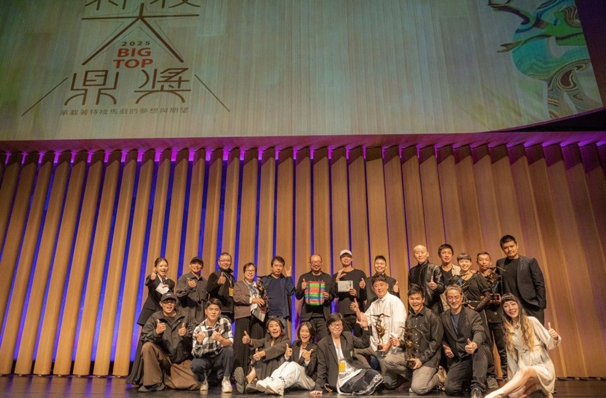

傳承特技藝術！第二屆「特技大鼎 BIG TOP 頒獎典禮」得獎名單出爐
臺灣特技舞蹈協會於衛武營國家藝術文化中心盛大舉行第二屆「特技大鼎 BIG TOP 頒獎典禮」，典禮由衛武營總監簡文彬致詞揭開序幕。本屆頒出 8 大獎項，包含新星獎（張少齊）、年度節目金獎（FOCASA《幾米男孩的 100 次勇敢》）等。
查看完整得獎名單 →【2025 衛武營馬戲平台】國際講座
探索當代馬戲生態，打破對馬戲的傳統印象。邀請來自捷克、柬埔寨、澳洲、加拿大、法國及台灣的國際馬戲策展與製作人，從不同視角分享實務與創作歷程。
時間：2025/12/6 (Sat) 11:00–13:00
地點：衛武營國家藝術文化中心 演講廳

【中國雜技團專業訓練計畫 徵選簡章】
主辦單位：中國雜技團；協辦單位：臺灣特技舞蹈協會。活動時間：2025/6/29（日）至 2025/7/26（六），歡迎有志青年報名參加此專業訓練計畫。
查看詳情 →
111 年 8 月 28 日第一屆會員大會
依內政部社會團體法組織規範，經本協會籌備委員會草擬，提交會員大會審議通過後，報主管機關核備。本協會入會費用以一次為原則，常年會費每年繳交一次，各位會員切勿任意斷會。
查看詳情 →
111 年 9 月 4 日第一屆第一次理監事聯席會議
依組織章程第二十六條，本會得設置各種委員會、小組或其他內部作業組織，其組織簡則由理事會擬定，載明設立依據、組成、任務、經費來源等，提經理事會通過。
查看詳情 →